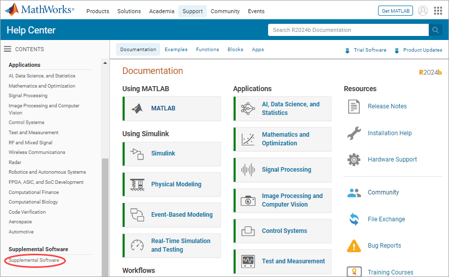
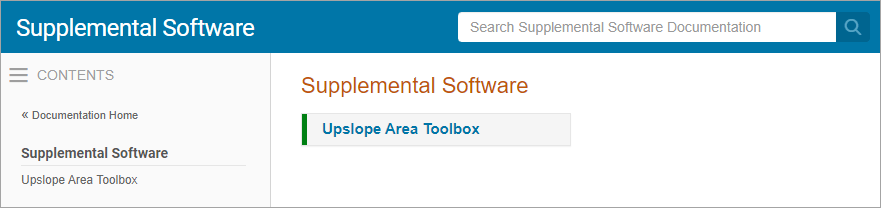
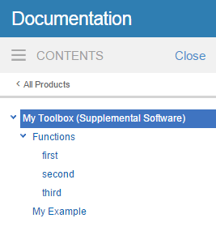
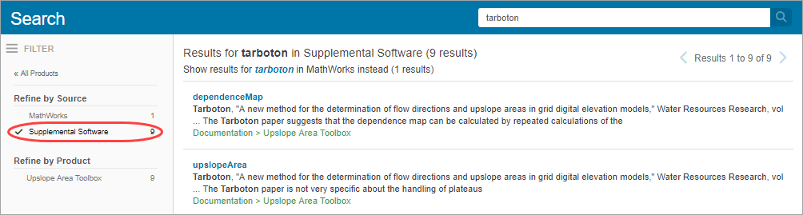

Display Custom Documentation
Overview
If you create a toolbox that works with MathWorks® products, even if it only contains a few functions, you can include custom documentation in the form of HTML help files. Custom documentation for your toolbox can include figures, diagrams, screen captures, equations, and formatting to make your toolbox help more usable.
To display properly, your custom documentation must contain these files:
HTML help files — These files contain your custom documentation information.
info.xmlfile — This file enables MATLAB® to find and identify your HTML help files.helptoc.xmlfile — This file contains the Table of Contents for your documentation that displays in the Contents pane of the MathWorks documentation home page. This file must be stored in the folder that contains your HTML help files.Search database (optional) — These files enable searching in your HTML help files.
To view your custom documentation, open your system web browser and navigate to the MathWorks documentation home page. On the left side of the home page, click Supplemental Software.

Then, click the name of your toolbox. Your documentation opens in the current tab of your system browser.

Create HTML Help Files
You can create HTML help files in any text editor or web publishing software. To create help files in MATLAB, use either of these two methods:
Create a live script (
*.mlx) and export it to HTML. For more information, see Ways to Share and Export Live Scripts and Functions.Create a script (
*.m), and publish it to HTML. For more information, see Publish and Share MATLAB Code.
Store all your HTML help files for your toolbox and any additional custom
documentation files referenced by your HTML help files (such as PNG, CSS, and JS
files) in one folder, for example, an html subfolder in your
toolbox folder.
This folder must be:
On the MATLAB search path
Outside the
matlabrootOutside any installed hardware support package help folder
Documentation sets often contain:
A roadmap page (that is, an initial landing page for the documentation)
Examples and topics that explain how to use the toolbox
Function or block reference pages
Create info.xml File
The info.xml file describes your custom documentation,
including the name to display for your documentation. It also identifies where to
find your HTML help files and the helptoc.xml file. Create a file
named info.xml for each toolbox you document.
To create info.xml to describe your toolbox, copy this template
code into a new file, save it as info.xml, and then adapt the
template for your toolbox:
The following table describes the required elements of the
info.xml file.
| XML Tag | Description | Value in Template | Notes |
|---|---|---|---|
<matlabrelease> | Release of MATLAB | R2016b | Indicates when you added help files. Not displayed in the browser. |
<name> | Title of toolbox | MyToolbox | The name to display for your custom documentation in the browser Contents pane. |
<type> | Label for the toolbox | toolbox | Allowable values: matlab,
toolbox, simulink,
blockset, links_targets,
other. |
<icon> | Icon for the Start button (not used) | none | No longer used, but the <icon> element
is still required for MATLAB to parse the info.xml file. |
<help_location> | Location of help files | html | Name of the subfolder containing helptoc.xml,
HTML help files, and any other custom documentation files (such as
PNG and CSS files) for your toolbox. If the help location is not a
subfolder of the info.xml file location, specify
the path to help_location relative to the
info.xml file. If you provide HTML help files
for multiple toolboxes, the help_location in each
info.xml file must be a different
folder. |
<help_contents_icon> | Icon to display in Contents pane | none | Ignored in MATLAB R2015a and later. Does not cause error if it appears
in the info.xml file, but is not
required. |
You also can include comments in your info.xml file, such as
copyright and contact information. Create comments by enclosing the text on a line
between <!-- and -->.
When you create the info.xml file, make sure that:
You include all required elements.
The entries are in the same order as in the preceding table.
File and folder names in the XML exactly match the names of your files and folders and are capitalized identically.
The
info.xmlfile is in a folder on the MATLAB search path.Note
MATLAB parses the
info.xmlfile and displays your documentation when you add the folder that containsinfo.xmlto the path. If you created aninfo.xmlfile in a folder already on the path, remove the folder from the path. Then add the folder again, so that MATLAB parses the file. Make sure that the folder you are adding is not your current folder.
Create helptoc.xml File
The helptoc.xml file defines the hierarchy of documentation
files displayed in the Contents pane of the MathWorks documentation home page.
To create a helptoc.xml file, copy this template code into a
new file, save it as helptoc.xml, and then adapt the template for
your toolbox:
Place the helptoc.xml file in the folder that contains your
HTML documentation files. This folder must be referenced as the
<help_location> in your info.xml
file.
Each <tocitem> entry in the
helptoc.xml file references one of your HTML help files. The
first <tocitem> entry in the helptoc.xml
file serves as the initial landing page for your documentation.
Within the top-level <toc> element, the nested
<tocitem> elements define the structure of your table
of contents. Each <tocitem> element has a
target attribute that provides the filename. File and path
names are case-sensitive.
When you create the helptoc.xml file, make sure that:
The location of the
helptoc.xmlfiles is listed as the<help_location>in yourinfo.xmlfile.All file and path names exactly match the names of the files and folders, including capitalization.
All path names use URL file path separators (/). Windows style file path separators (
\) can cause the table of contents to display incorrectly. For example, if you have an HTML help pagefirstfx.htmllocated in a subfolder calledrefpageswithin the main documentation folder, the<tocitem>targetattribute value for that page would berefpages/firstfx.html.
Example helptoc.xml File
Suppose that you have created the following HTML files:
A roadmap or starting page for your toolbox,
mytoolbox.html.A page that lists your functions,
funclist.html.Three function reference pages:
firstfx.html,secondfx.html, andthirdfx.html.An example,
myexample.html.
Include filenames and descriptions in a helptoc.xml file as
follows:
<?xml version='1.0' encoding="utf-8"?>
<toc version="2.0">
<tocitem target="mytoolbox.html">My Toolbox
<tocitem target="funclist.html">Functions
<tocitem target="firstfx.html">first</tocitem>
<tocitem target="secondfx.html">second</tocitem>
<tocitem target="thirdfx.html">third</tocitem>
</tocitem>
<tocitem target="myexample.html">My Example
</tocitem>
</tocitem>
</toc>This helptoc.xml file, paired with a properly formulated
info.xml file, produced this display in the
documentation.

Build a Search Database
To make your documentation searchable, create a search database, also referred to
as a search index, using the builddocsearchdb function. When using this function, specify the
complete path to the folder that contains your HTML files.
For example, suppose that your HTML files are in
C:\MATLAB\MyToolbox\html. This command creates a searchable
database for those files:
builddocsearchdb('C:\MATLAB\MyToolbox\html')builddocsearchdb creates a subfolder of
C:\MATLAB\MyToolbox\html named
helpsearch-v4, which contains the database files.
To search for terms in your toolbox, open the MathWorks documentation in your system web browser and in the Search Documentation field, enter the term you want to search for. Then, on the left side of the page, under Refine by Source, select Supplemental Software to view the results for your toolbox.

Beginning with MATLAB R2014b, you can maintain search indexes side by side. To ensure the
documentation for the custom toolbox is searchable in a given release, run
builddocsearchdb against your help files using that release
of MATLAB. If you run builddocsearchdb using R2021b or a
previous release, builddocsearchdb creates the subfolder
helpsearch-v3 to contain the search database files. Maintain
both the helpsearch-v4 subfolder and the
helpsearch-v3 subfolder side by side. Then, when you run any
MATLAB release, MATLAB automatically uses the appropriate database for searching your
documentation.
Address Validation Errors for info.xml Files
What Are XML Validation Errors?
When MATLAB finds an info.xml file on the search path or in
the current folder, it automatically validates the file against the supported
schema. If there is an invalid construct in the info.xml
file, MATLAB displays an error in the Command Window. The error is typically of
the form:
Warning: File <yourxmlfile.xml> did not validate. ...
An info.xml validation error can occur when you start
MATLAB or add folders to the search path.
The primary causes of an XML file validation error are:
Entities are missing or out of order in the
info.xmlfile.An unrelated
info.xmlfile exists.Syntax errors in the
info.xmlfile.MATLAB is trying to access an outdated
info.xmlfile for a MathWorks product.
Entities Missing or Out of Order in info.xml
If you do not list required XML elements in the prescribed order, you receive an XML validation error:
Often, errors result from incorrect ordering of XML tags. Correct the error by updating the info.xml file contents to follow the guidelines in the MATLAB help documentation.
info.xml file
and their required ordering, see Create info.xml File.Unrelated info.xml File
Suppose that you have a file named info.xml that has
nothing to do with custom documentation. Because this
info.xml file is an unrelated file, if it causes an
error, you can safely ignore it. To prevent the error message from reoccurring,
rename the unrelated info.xml file. Alternatively, ensure
that the file is not on the search path or in the current folder.
Syntax Errors in the info.xml File
Use the error message to isolate the problem or use any XML schema validator.
For more information about the structure of the info.xml
file, consult its schema at
matlabroot/sys/namespace/info/v1/info.xsd.
Outdated info.xml File for a MathWorks Product
If you have an info.xml file from a different version of
MATLAB, that file could contain constructs that are not valid with your
version. To identify an info.xml file from another version,
look at the full path names reported in the error message. The path usually
includes a version number, for example, ...\MATLAB\R14\....
In this situation, the error is not actually causing any problems, so you can
safely ignore the error message. To ensure that the error does not reoccur,
remove the offending info.xml file. Alternatively, remove the
outdated info.xml file from the search path and out of the
current folder.